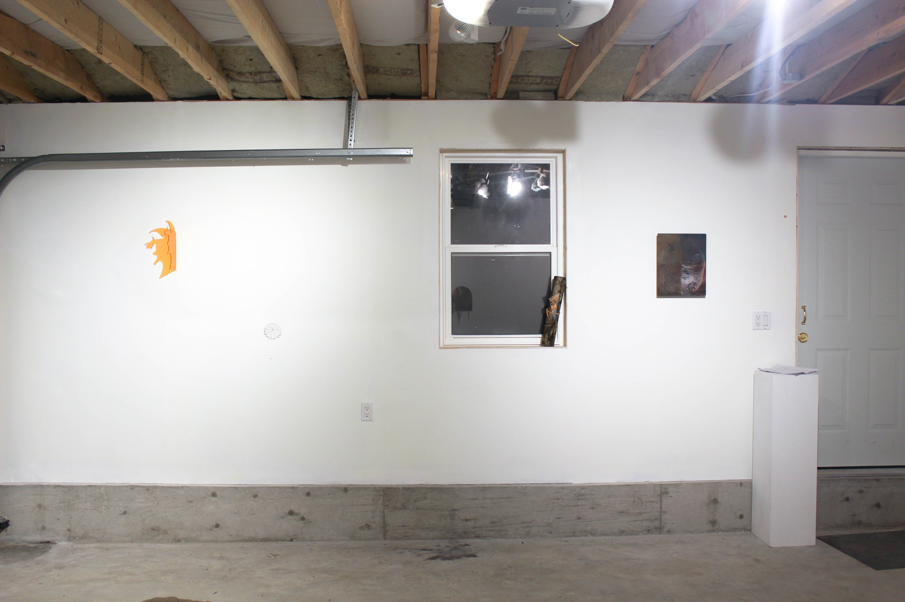

DOCUMENTATION

Exhibition View. Image by Philip Ocampo.

L-R: Andrew Harding,
Untitled (Tribute), acrylic, 2019; Andrew Harding,
Tying Lessons, vinyl, photo, leather twine, tape, 2019; Cadence Planthara,
Untitled (quadrant painting), acrylic, enamel on hardboard, 8 peppercorns, 2015-19. Image by Philip Ocampo.

Andrew Harding,
Untitled (Tribute), acrylic, 2019. Image by Liam Moore.

Exhibition View. Image by Philip Ocampo.

Cadence Planthara,
Untitled (quadrant painting), acrylic, enamel on hardboard, 8 peppercorns, 2015-19. Image by Philip Ocampo

L-R: Shannon Garden-Smith,
Sand Candle, sand, candle gel wax, dimensions variable, 2019; Shannon Garden-Smith,
Curtain Wall (Tending Toward), dyed and stamped polyester fleece blanket, 2018; Cadence Planthara,
Untitled (2 white flowers), gessoed stoneware / glazed stoneware, finishing nails, 2019. Image by Philip Ocampo.

Shannon Garden-Smith,
Sand Candle, sand, candle gel wax, dimensions variable, 2019. Image by Philip Ocampo.

Exhibition View. Image by Philip Ocampo.

Misbah Ahmed,
Dalmation Running, ceramic vessel, 2019. Image by Philip Ocampo.

Andrew Harding,
Urban Hide, tshirts, silver plated chain, 2019. Image by Philip Ocampo.
Andrew Harding,
Urban Hide, tshirts, silver plated chain, 2019. Image by Philip Ocampo.

Andrew Harding,
Urban Hide, tshirts, silver plated chain, 2019. Image by Philip Ocampo.

Cadence Planthara, in the wall, freshwater pearls, cotton, peppercorn, glazed stoneware. Image by Philip Ocampo.
Cadence Planthara, in the wall, freshwater pearls, cotton, peppercorn, glazed stoneware. Image by Philip Ocampo.
OPENING NIGHT
November 23rd, 2019
Documentation by Liam Moore